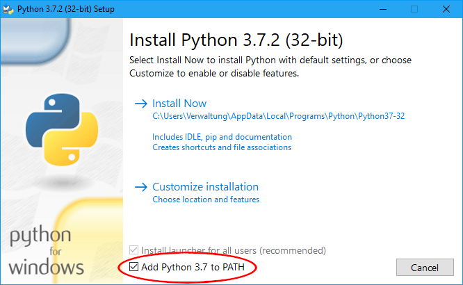

Documentation
The Documentation you are currently reading is written using mkdocs. It is a tool that will generate a static website based on files writting in markdown. Markdown has the advantage that it is simple to read and write, and that there are several tools that can translate a markdown file into languages like html or latex.
Installation
Mkdos is written in python and is distributed through the python internal package manager pip, thus you need to get python and pip running on your operating system first.
Windows
- Download the latest Python3.
- When running the setup program make sure to check
Add Python 3.x to PATH.  - Install python
- Open powershell or cmd, and type:
pip3 install mkdocs.
MacOS
MacOS already comes with Python already installed, however pip is still missing. The easyest, and most nondistructive way is to install the MacOS package manager homebrew first. The advantage of homebrew are that it will only modify your home directory, but not the root dir. So your OS will not be touched by this.
- Install homebrew
- Install Python from homebrew, which will also install pip.
- Run this command:
brew install python - Install mkdocs:
pip3 install mkdocs
Alternativeley, without Homebrew, you can use the depreceated but preinstalled easy_install tool to install pip:
- Run
sudo easy_install pipto install pip - Update pip with
sudo pip install --upgrade pip - Run
sudo pip install mkdocsto install mkdocs
Linux/*BSD
Also Linux/*BSD comes pre installed with python. Most distributions also deliver pip by default. If its not installed you may need to figure out how to install pip3 through the package manager of your system.
- Install pip3 with these commands according to distributions:
- Ubuntu/Mint:
apt install python3-pip - Fedora/CentOS:
sudo dnf install python3-pip - Arch/Manjaro:
sudo pacman -S python-pip - openSuse:
sudo zypper install python-pip - *BSD: You are already advanced enough to know how you can force the bits on your disk to become pip by meditating upon it.
- Ubuntu/Mint:
- Run
pip3 install mkdocsto install mkdocs only for the current user, or runsudo pip3 install mkdocsto install mkdocs systemwide. Last one has the higher chance to work properly.
Android/ChromeOS
This might sound funny, but according to the growing amount of Android tablets with keyboard, and ChromeBooks this might actually be useful.
- Install the Tremux App from f-droid.
- Launch Termux and type
apt update - Install python and git with the command:
apt install git python - Now install mkdocs with
pip install mkdocs.
From here on everything will be the same as on Desktop. If you want to edit the files you can (besides vim or emacs which are available through Termux) use your favourite text editor on android. This is possible by opening the files with the Termux integration of the build in android file manager:

Update
Sometimes mkdocs changes the way how to serve, or the syntax will differ. This is why you should make sure to always run the latest version of mkdocs. To ensure this simply run pip3 install --upgrade mkdocs or sudo pip3 install --upgrade mkdocs if you installed pip system wide on a linux/bsd system.
Using mkdocs
In order to extend this documentation you have to clone it from its git repository. When you cloned it, you will find a mkdocs.yml file, and a docs directory inside. The yaml file is the config file while in the directory docs the documentation files are stored. here is a guide about how to use mkdocs.
Write and Deploy
If you are writing a documentation page, and want a live preview of it you can enter the root directory of this documentation project, and then run mkdocs serve this will start the mkdocs internal webserver on port 8000. So all you have to do is type localhost:8000 into the addressbar of your browser, and here you go. If you modify a file, and save it, mkdocs will reload the page and show you the new content.
If you want to deploy the page, so it will be up to date at the github pages simply type mkdocs gh-deploy. However please be aware that this will not push your changes to the master branch of the repository. So you still have to commit and push your changes to the actual git repository of this documentation.